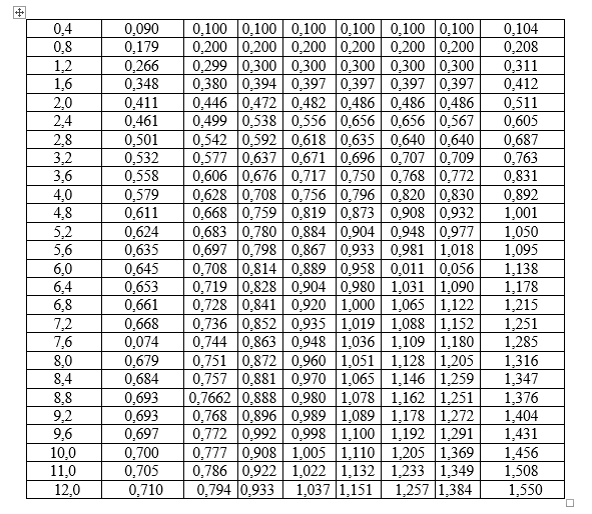
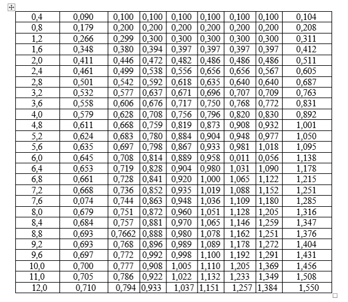

2.7.4 Poydevorning cho‘kish qiymatini hisoblash
Siqiladigan qatlam chegarasidagi qo'shimcha bosim epyurasi bir necha alohida elementar
qatlamlarga bo'linadi, bir jinsli har bir grunt qatlami chegarasida mazkur elementar qatlamlar
qalinligi bir-biriga teng olish tavsiya qilinadi ( 7 -rasm, h1 va h2). Elementar qatlamlarning
qalinligi hi (h1 va h2) ni tanlaganda quyidagi shartga rioya qilish zarur:
hi≤ 0,4 *·b
So'ngra epyuraning har bir elementi chegaradagi qo'shimcha (tabiiy) bosimni aniqlash kerak. Ular
mazkur elementar qatlamning ustki va pastki chegaralaridagi
qo'shimcha bosim
GZP lar yig'indisining yarmiga teng bo'lib, bevosita masshtab
bo'yicha aniqlanadi. Egri chiziqli epyura pog'onali epyuraga keltiriladi.
Poydevorning cho'kishi “U” elementar qatlamlaridagi cho'kish qiymatlarini jamlash usulida
aniqlashda quyidagi formuladan foydalaniladi
Bu yerda:
S - poydevorning so„nggi (barqarorlashgan) cho'kishi;
K – daryo o'zanidagi grunt qatlami chegarasidagi joylashgan elementar qatlamlar soni ;
U- siqiladigan qatlam chegarasidagi elementlar soni (aktiv zonadagi barcha elementar qatlamlar
soni);
U - K ostki qatlam chegarasida joylashgan elementar qatlamlar soni;
h1 - daryo o'zanidagi grunt qatlami chegarasidagi joylashgan elementar
qatlamcha qalinligi, m;
h2 - ostki qatlamdagi tub grunt chegarasida joylashgan elementar qatlamcha qalinligi, m;
E1 – daryo o'zanidagi gruntning deformatsiya moduli, MPa;
E2 – ostki qatlamdagi gruntning deformatsiya moduli, MPa;
Gzi - har bir element chegarasidagi o'rtacha qo„shimcha (tabiiy) bosim kPa;
β – o'lchov birligisiz koeffitsient bo'lib grunt turi bo'yicha qabul qilinadi:
- yirik bo'lakli va yirik qumli gruntlar uchun B = 0,8; qumlar va qumoq tuproqlar uchun B =
0,74; sog' tuproqlar uchun B = 0,62; gil tuproqlar uchun B
= 0,43.
Ostki qatlamda siqilmaydigan tub grunt mavjud bo‘lganda sayoz joylashgan poydevorning cho‘kish
qiymatini hisoblash (QMQ bo‘yicha)
Bu holda poydevorning cho'kish qiymati zaminning qalinligi N bo'lgan chiziqli-
deformatsiyalanuvchi elastik qatlam sifatida qabul qilingan 2- hisobiy sxema (8-rasm) bo'yicha
aniqlanadi:
Siqilmaydigan tub gruntning mavjudligi zo'riqishni siqiladigan qatlamda to„planishiga sabab
bo„ladi. Siqiladigan qatlamda qo„shimcha bosimlar epyurasi poydevor ostki yuzasi og'irlik
markazidan o'tgan tik chiziq bo„yicha ikki nuqtada chiziladi; poydevor ostidagi tekislikka to'la
o'rtacha bosim
P = Go'rt
(tabiiy bosim hisobdan chiqarilmaydi) ta'sir ko'rsatadi; bu bosim
yuqorida hisoblab topilgan edi. Siqilmaydigan tub gruntning yuqori chegarasidagi tekislikka, esa
GZP bosim ta'sir ko'rsatadi:
GZPZP = K0 * P
Koeffitsienti K0 ning qiymati siqiladigan qatlamning nisbiy qalinligi 2H/b ga hamda
poydevor
tomonining o'zaro nisbati n=l/b ga qarab 7- jadvaldan tegishli qiymatlar tanlanadi.
Izoh: H - siqiladigan qatlamning poydevor ostki yuzasidan siqilmaydigan qatlamgacha hisoblangan
qalinlik;
b- poydevor ostki yuzasining kengligi;
l - poydevor ostki yuzasining uzunligi;
Masshtab asosida tik o„qdan boshlab Gzp= P
(poydevor ostidagi tekislikda
va GZP = K0 * P
(tub gruntning yuqori chegarasidagi tekislikda) aniqlanadi va
kesmalarning uchlari uzluksiz egri chiziq yordamida tutashtiriladi, natijada epyura hosil
bo'ladi.
Gzp
Agar siqiladigan qatlam chegarasidagi grunt bir jinsli bo'lsa, u holda poydevorning cho'kish
qiymati quyidagi formula yordamida aniqlanadi:
Bu yerda: b - to'g'ri to'rt burchakli poydevorning eni yoki doiraviy shakldagi poydevorning
diametri, m;
R - poydevor orqali zaminga ta‟sir ko'rsatuvchi o„rtacha
bosim, KPa;
Kc , KM
qabul qilinadi;
- tuzatish koeffitsientlari bo„lib, 8 va 9-jadvallar bo„yicha
Ki – i qatlam uchun 10 – jadvaldan olinadigan koeffitsient. Bu
koeffitsient poydevor ostki yuzasining shakliga, to'g'ri burchakli poydevor tomonlarining o'zaro
nisbati n=l/b hamda poydevor ostidagi qatlamning joylashish chuqurligi z bilan poydevorning
yarim eni m=2ƶ/b
yoki radiusi m=ƶ/r o'rtasidagi nisbatiga qarab tanlanadi.
Ei- i qatlamdagi deformatsiya moduli.

